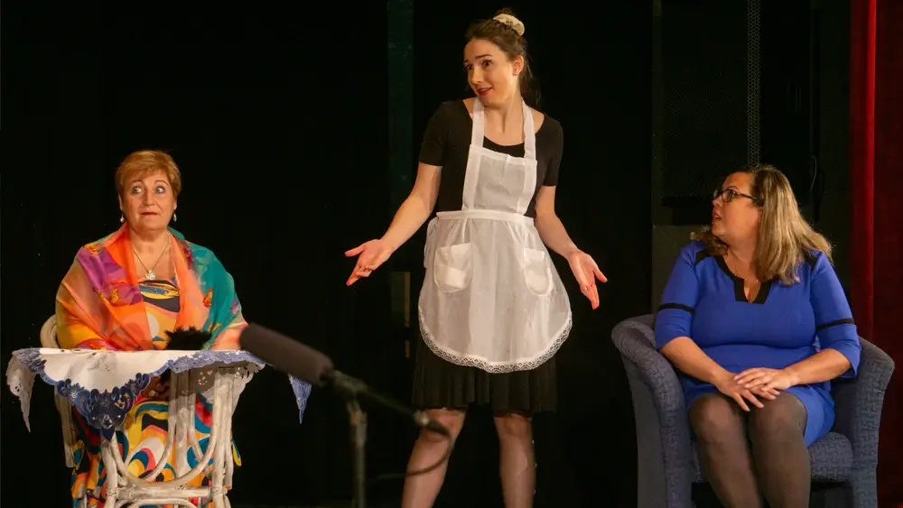
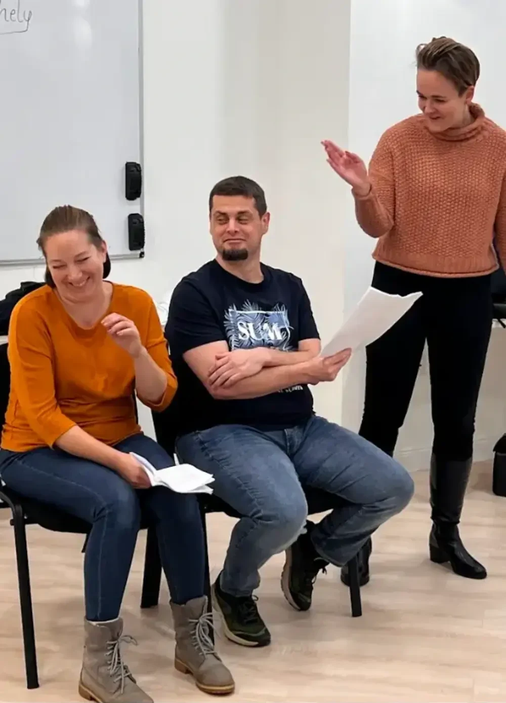

Kezdő kurzus
Ha még nem találkoztál hasonló felnőtt képzéssel, de érdekel a színház világa, és szívesen belekóstolnál annak működésébe, akkor itt a helyed!
- Ritmus
- heti 1 × 2 óra
- Hossz
- 20 alkalom + 2 opcionális
- Helyszín
- 1027 Budapest, Frankel Leó út 6.
- Díj
- 140 000 Ft-tól

Válassz időpontot.
Mindhárom csoport heti egy alkalommal, két órában találkozik, összesen 20 alkalommal.
Amit a kurzus ad neked.
A kreatív energiáid felszabadításával átélheted a színjátszás és az alkotás örömét
Profi színészek irányítása alatt biztonságosan kipróbálhatod magad különböző helyzetekben
Fejlődni fog a magabiztosságod és a kommunikációd
Jobban fogod érteni önmagad és mások működését
Mit fogsz tanulni?
- 1Csoportos és egyéni játékok által, az improvizáció és a drámai helyzetek gyakorlása
- 2Szituációs feladatok segítségével modellezzük a mindennapokban előforduló élethelyzeteket, és az arra adott érzelmi, illetve tudatos válaszokat
- 3Egy én-monológ megírását kérjük első feladatként majd tőled, melyből tanáraid és csoporttársaid jobban megismerhetik, ki vagy te, és mi mozgat téged
- 4Drámapedagógusaink egy olyan monológot választanak neked a világirodalom klasszikusai közül, ami jól passzol a személyiségedhez
- 5Montágh Imre beszédtechnika-gyakorlataival kialakíthatod a magabiztosabb kommunikációt
Főpróba és vizsgaelőadás
A kurzus alatt elsajátított monológokat egymásra fűzve jön létre a „vizsgaelőadás”, amit nézők előtt (meghívott család, barátok, ismerősök) adunk elő, profi színházi körülmények között. A két alkalom grátisz és opcionális: ha nem kívánsz színpadra állni, nem kötelező igénybe venni.

Biztonságos közeg, jókedvű tanulás.
Fiatal, haladó gondolkodású oktatóink minden héten azon vannak, hogy hallgatóink felszabadultan és jókedvvel sajátítsák el a színház különböző területeinek tudását. Támogatásukkal biztonságos környezetben próbálhatod ki magad számodra új helyzetekben.
„Színház az egész világ, és színész benne minden férfi és nő.”
— Shakespeare
A színészmesterség alapjai elsősorban a mindennapi szituációk és az ezekre adott különböző reakciók, ezekkel nap mint nap mindenki szembesül. A színház a való élet leképezése, egy tükörtartás a mindennapi életnek — az alapok elsajátításához semmilyen extra képességre nincs szükség.
Innen indul az utad.
Kezdő kurzus
Játékok, improvizáció, monológ-munka és beszédtechnika — a végén vizsgaelőadással.
Szakmai csoport
Részletesebben foglalkozunk improvizációval, különféle színészi munkamódszerekkel, mozgással, hanggal és beszédgyakorlatokkal, majd ezek segítségével különböző jeleneteket építünk fel.
Társulat
A szakmai csoport legjobb tanulói zárt társulatban, 6–9 hónapos felkészülési folyamat után, hivatásos színészekkel együtt játszhatnak több száz fős nagyközönség előtt egy teljes színházi előadást.
Így látják a Morpheust.
Cetlik a próbaterem faláról: hallgatóink saját szavaival arról, mit jelent nekik a heti alkalom.
A 20 + 2 alkalom díja
A részvételi díjat egyben vagy részletekben is kiegyenlítheted.
Próbáld ki előbb egy szombaton.
A Nyitott Műhelyre kötöttség nélkül, alkalmanként csatlakozhatsz.